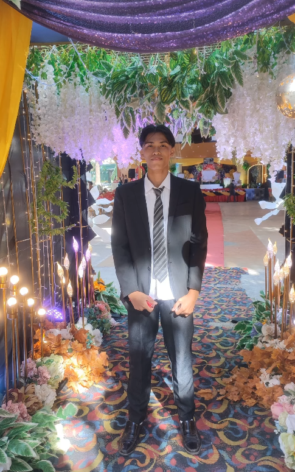
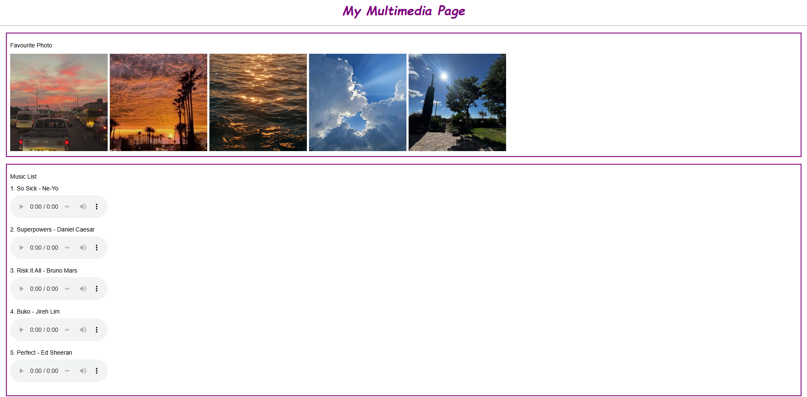
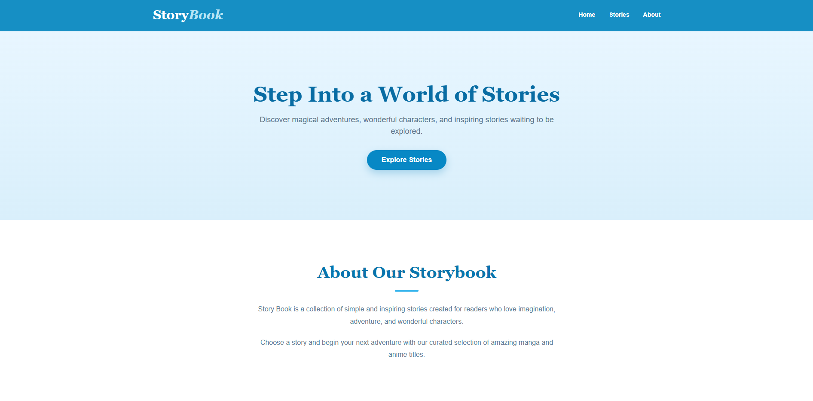
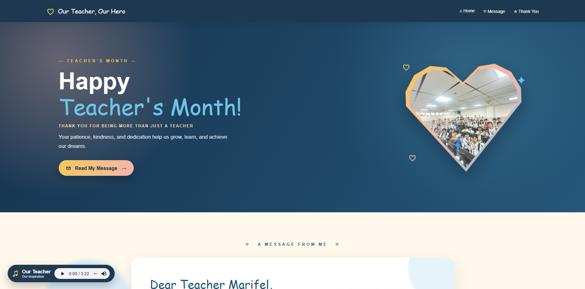

Hi, I'm ALVIN B. LOQUIÑO
An aspiring IT professional passionate about modern web design, software development, and interactive digital solutions.
Explore Work
About Me
Personal Background
Hello, I am a student currently taking Bachelor of Science in Information Technology. I am interested in building efficient software solutions, clean visual components, and learning full-stack web architectures.
I am a dedicated Information Technology student with a strong passion for web development, programming, and user interface design. I enjoy turning complex challenges into clean, functional, and visually engaging digital experiences. I am always eager to learn new technologies, build practical applications, and continuously expand my skills in software development.
My academic training includes structured cabling setup, and logic formulation in C++ and JavaScript.
Education
Bachelor of Science in Information Technology
Specializing in web and core application development.
School: Bestlink College of the Philippines
Year Level: Second-Year College
Program: Bachelor of Science in Information Technology (BSIT)
Technical & Personal Skills
Technical Skills
- HTML5 & CSS3: Basic knowledge of structuring semantic web pages and styling layouts with Flexbox and modern CSS gradients.
- JavaScript: Fundamental understanding of DOM manipulation, handling click events, and adding interactive elements like dark mode toggles.
- C++ Programming: Working knowledge of core programming concepts, control structures, custom functions, and interactive menu-driven console applications.
- Computer Hardware & Cabling: Basic understanding of structured network cabling layouts and standard IT infrastructure principles.
Personal Skills
Course Projects

MY MULTIMEDIA PAGE
A digital space that combines text, images, audio, video, and animations to share information.
View Activity
STORY BOOK
Discover magical adventures, wonderful characters, and inspiring stories waiting to be explored.
View Activity
TEACHER'S MONTH
National Teachers' Month in the Philippines is a month-long celebration from September 5 to October 5.
View ActivityContact Information
Reach Out Directly
📞 Phone: +63 963 259 4854
✉️ Email: alvinloquino55@gmail.com